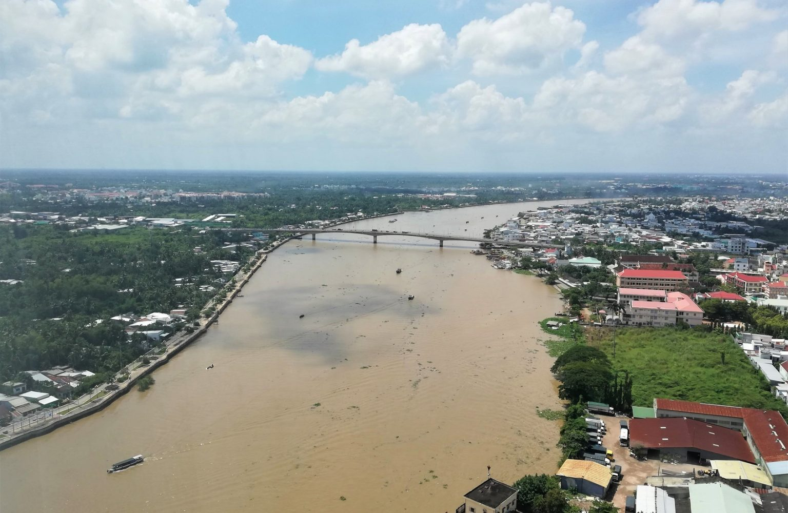

About Us
Rapid urbanization and climate change pose unprecedented challenges to global sustainability. Our research explores innovative satellite remote sensing, physical modeling, and AI-driven analytical model to uncover the fundamental processes driving urban geohazards and climate change across multiple spatiotemporal scales. We ultimately aim to enhance resilience and promote sustainable development through data-driven insights.

Multi-Source Satellite Remote Sensing
To integrate multi-source, multi-spectral, multi-resolution optical and radar remote sensing imagery for effective environmental mapping.
AI for Science and Geospatial Big Data
To develop innovative knowledge-guided AI and big data methods to detect complex geospatial patterns and advance scientific discovery.

City-Cluster Scale Subsidence Monitoring
To combine AI methods into InSAR remote sensing and achieve millimeter-level accuracy of land subsidence monitoring on metropolitan deltaic areas.
Carbon Neutrality and Climate Change
To harness satellite observations and climate modeling to monitor emissions, assess climate impacts and support global sustainability efforts.